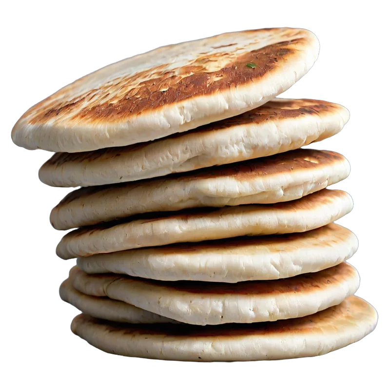
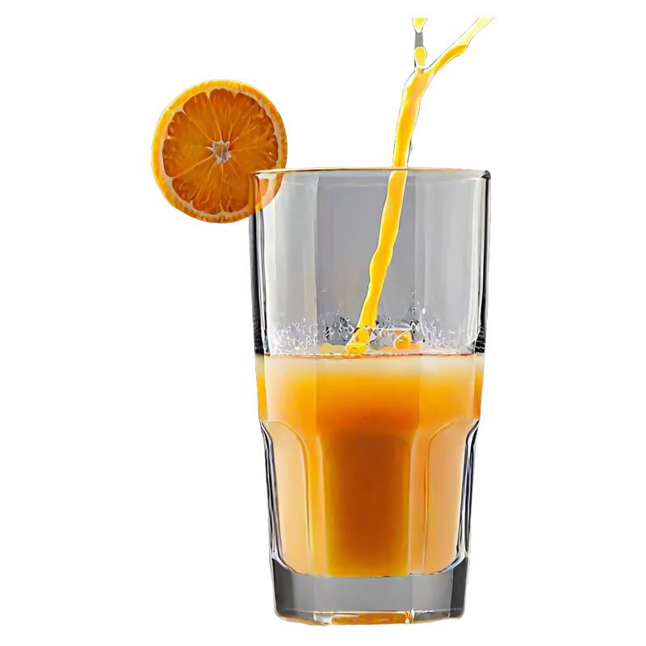
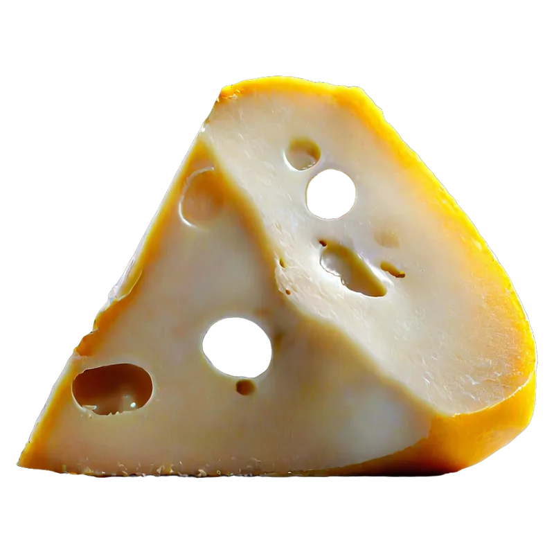
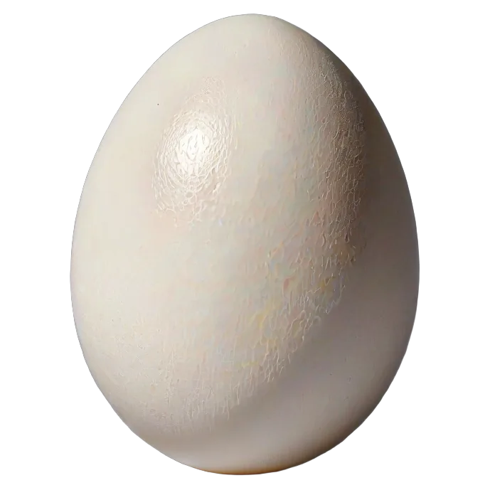
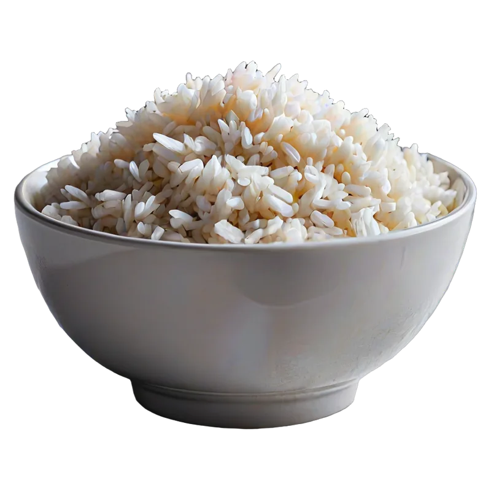
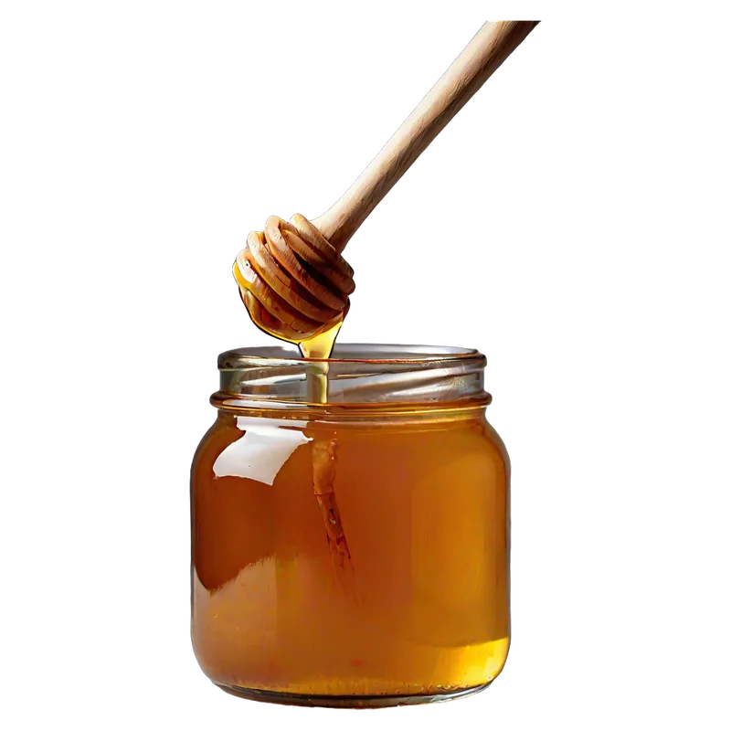
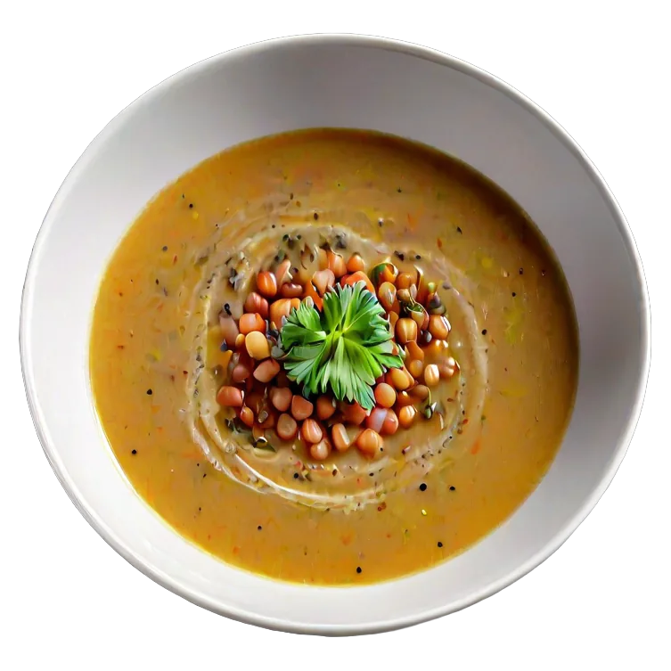
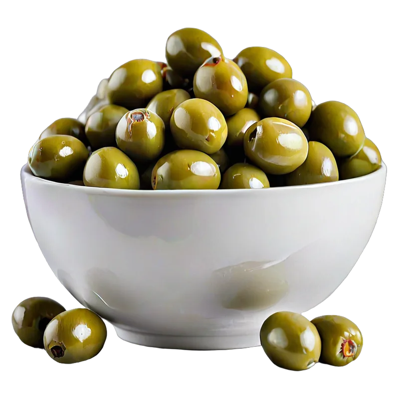

خُبْز
كِتَابِي الْأَوَّل
طَعَامِي

صِغَارُ الضَّاد
18-food · page 1 · front cover
هَذَا الْكِتَابُ لِـ:
18-food · page 2 · inside front cover
خُبْز

18-food · page 3 · item 01
حَلِيب
18-food · page 4 · item 02
عَصِير

18-food · page 5 · item 03
جُبْن

18-food · page 6 · item 04
بَيْضَة

18-food · page 7 · item 05
أَرُزّ

18-food · page 8 · item 06
عَسَل

18-food · page 9 · item 07
شُورْبَة

18-food · page 10 · item 08
كَعْكَة
18-food · page 11 · item 09
زَيْتُون

18-food · page 12 · item 10
كُلُّهَا مَعًا!
حَلِيب
عَصِير
جُبْن
بَيْضَة
أَرُزّ
عَسَل
شُورْبَة
زَيْتُون
18-food · page 13 · recap
أَيْنَ الْخُبْزُ؟
18-food · page 14 · question
صِغَارُ الضَّاد
حَيَوَانَاتُ الْبَحْر
الْحَشَرَات
صِغَارُ الْحَيَوَانَات
حَيَوَانَاتُ الصَّحْرَاء
الْآلَاتُ الْمُوسِيقِيَّة
الطَّبِيعَةُ وَالطَّقْس
مَلَابِسِي
طَعَامِي
بَيْتِي
أَلْعَابِي
18-food · page 15 · inside back cover
صِغَارُ الضَّاد
يتعرّف طفلك على أطعمة يومية يحبها بصور حقيقية واضحة.
من عمر سنة إلى ٣ سنوات
ISBN / BARCODEprinter places it here
18-food · page 16 · back cover